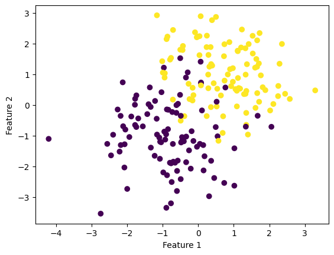

import numpy as np
import pandas as pd
import seaborn as sns
from matplotlib import pyplot as plt
from sklearn.datasets import make_blobs
from optimization_logistic_regression import LogisticRegressionThe implementation of the perceptron algorithm could be found here: https://github.com/Hedavam/Hedavam.github.io/blob/main/posts/Optimization%20for%20Logistic%20Regression/lr.py
This article was helpful for drafting this blog post: https://towardsdatascience.com/batch-mini-batch-stochastic-gradient-descent-7a62ecba642a
Overview of Gradient Descent
We want to minimize the empirical risk of our training model with linear predictions. (eq. below)
\(L(\mathbf{w}) = \frac{1}{n} \sum_{i = 1}^n \ell(f_{\mathbf{w}}(\mathbf{x}_i), y_i)\;.\)
To do so with ease, we must choose a convex loss function. Doing so guarantees us a way to find any local minimum, which in turn is the global minimum by the definition of convexity.
An algorithm to help us find this minimum is gradient descent. Intuitively, it’s as if we’re on a hill and take little steps towards the bottom and eventually make it to the bottom. To choose the direction and magnitude of these steps we calculate the gradient of the empirical risk function. The negative gradient, mathematically, moves us in a descent direction. So, subtracting the gradient from our paramter vector, we will descend and eventually the gradient will reach 0 when the algorithm converges after finding the minimum.
Batch
Batch gradient descent makes use of all the training data (every epoch), computes the gradient for each sample and uses the average of these gradients for the actual gradient step as it subtracts this average gradient from the parameters for however many epochs (iterations) are needed for convergence or however many epochs the user specifies as the max (hyperparameter). There’s also another hyperparameter, the learning rate, which adjusts our step size. Mathematically, if our step size is small enough, this algorithm will converge.
Stochastic
Stochastic gradient descent also makes use of all the training data (every epoch), but divides it into batches to compute gradients and take steps with this gradient for this batches. This process is repeated for the remaining batches of the training data. The hypermarameter in this algorithm is the size of the batches.
Batch Gradient Descent Example
# make the data
p_features = 3
X, y = make_blobs(n_samples = 200, n_features = p_features - 1, centers = [(-0.7, -1), (0.7, 1)])
fig = plt.scatter(X[:,0], X[:,1], c = y)
xlab = plt.xlabel("Feature 1")
ylab = plt.ylabel("Feature 2")
weight = 0
empirical_risk_history = []
score_hist = []
LR = LogisticRegression(weight, empirical_risk_history, score_hist)# fit the model
LR.fit(X, y, alpha = .01, max_epochs = 1000) #alpha is the size of our steps; #epochs is our number of steps; trade-off between the two interesting
print("with a paramter vector of " + str(LR.w)) # inspect the fitted value of w
print("Algorithm converged after " + str(len(LR.loss_history)) + " iterations") #number of iterations it took algo. to converge
fig = plt.scatter(X[:,0], X[:,1], c = y)
xlab = plt.xlabel("Feature 1")
ylab = plt.ylabel("Feature 2")
def draw_line(w, x_min, x_max):
x = np.linspace(x_min, x_max, 101)
y = -(w[0]*x + w[2])/w[1]
plt.plot(x, y, color = "black")
fig = draw_line(LR.w, -4, 4)Conveged
with a paramter vector of [ 1.65690421 2.6592413 -0.13685123]
Algorithm converged after 664 iterationsVisualization of the linear regression’s (with batch gradient descent) resulting linear separator
print(LR.loss_history[-10:])
print(LR.score_history[-10:])[0.21368107742344108, 0.21367578489869984, 0.21367090291582383, 0.21366642995530682, 0.21366236450495152, 0.2136587050598277, 0.21365545012223122, 0.21365259820164284, 0.21365014781468727, 0.21364809748509303]
[0.935, 0.935, 0.93, 0.93, 0.93, 0.93, 0.93, 0.93, 0.93, 0.93]Stochastic Gradient Descent Example
#fit the model
LR.fit_stochastic(X, y, alpha = 0.1, max_epochs = 200, batch_size = 100)
print("with a paramter vector of " + str(LR.w)) # inspect the fitted value of w
print("Algorithm converged after " + str(len(LR.loss_history)) + " iterations") #number of iterations it took algo. to convergeConverged
with a paramter vector of [1.66560371 2.47663612 0.19391676]
Algorithm converged after 750 iterationsfig = plt.scatter(X[:,0], X[:,1], c = y)
xlab = plt.xlabel("Feature 1")
ylab = plt.ylabel("Feature 2")
def draw_line(w, x_min, x_max):
x = np.linspace(x_min, x_max, 101)
y = -(w[0]*x + w[2])/w[1]
plt.plot(x, y, color = "black")
fig = draw_line(LR.w, -4, 4)Visualization of the linear regression’s (w/ batch gradient descent) resulting linear separator
print(LR.loss_history[-10:])
print(LR.score_history[-10:])[0.21881463654047928, 0.21862614050226867, 0.2184392184456595, 0.2182587488438184, 0.21808195275421505, 0.21790986260736267, 0.2177438122610745, 0.21757944141182547, 0.21741869240721862, 0.21726187710065234]
[0.935, 0.935, 0.935, 0.935, 0.935, 0.935, 0.935, 0.935, 0.935, 0.935]Take-away: Both optimization methods for logistic regression result in similar linear separators.
Further Experiments
Speed comparison for batch vs. stochastic gradient descent
LR = LogisticRegression(weight, empirical_risk_history, score_hist)
LR.fit_stochastic(X, y, alpha = 0.1, max_epochs = 1000, batch_size = 10) #small batch size converges faster; does a lot more updates (in inner loop)?
num_steps = len(LR.loss_history)
print(num_steps)
plt.plot(np.arange(num_steps) + 1, LR.loss_history, label = "stochastic gradient")
LR = LogisticRegression(weight, empirical_risk_history, score_hist)
LR.fit(X, y, alpha = .01, max_epochs = 1000) #.005 and 10000 converges nearly every time; .01 and 1000 converges; #.01 is too big for 1000 epochs
num_steps = len(LR.loss_history)
print(num_steps)
plt.plot(np.arange(num_steps) + 1, LR.loss_history, label = "gradient")
plt.loglog()
legend = plt.legend() Converged
12
Conveged
570Visualization of the number of iterations it took linear regression algorithm to converge for batch vs. stochastic gradient descent
LR = LogisticRegression(weight, empirical_risk_history, score_hist)
LR.fit_stochastic(X, y, alpha = 0.1, max_epochs = 1000, batch_size = 10) #small batch size converges faster; does a lot more updates (in inner loop)?
num_steps = len(LR.loss_history)
print(num_steps)
plt.plot(np.arange(num_steps) + 1, LR.loss_history, label = "stochastic gradient")
LR = LogisticRegression(weight, empirical_risk_history, score_hist)
LR.fit(X, y, alpha = .01, max_epochs = 1000) #.005 and 10000 converges nearly every time; .01 and 1000 converges; #.01 is too big for 1000 epochs
num_steps = len(LR.loss_history)
print(num_steps)
plt.plot(np.arange(num_steps) + 1, LR.loss_history, label = "gradient (small lr)")
LR = LogisticRegression(weight, empirical_risk_history, score_hist)
LR.fit(X, y, alpha = .5, max_epochs = 1000) #.005 and 10000 converges nearly every time; .01 and 1000 converges; #.01 is too big for 1000 epochs
num_steps = len(LR.loss_history)
print(num_steps)
plt.plot(np.arange(num_steps) + 1, LR.loss_history, label = "gradient (big lr)")
plt.loglog()
legend = plt.legend() Converged
3
Conveged
542
1000Take-away 1: Stochastic gradient descent converges faster than batch gradient descent because it updates the parameters more frequently.
For stochastic gradient descent, in one epoch, we take many gradient steps (one for each batch) while for batch gradient descent we only take one gradient step for every epoch.
Take-away 2: Too large of a learning rate will prevent linear regresion model optimized with gradient descent from converging.
Linear Regression w/ stochastic and batch gradient descent on multi-dimensional data
# make the data
p_features10 = 3 #gives us 10 n_features
X10, y10 = make_blobs(n_samples = 200, n_features = p_features - 1, centers = [(-0.5, -1, 0.2, 0.1, 0.2 , 0.3, 0.4 , 0.5, 0.6, 0.7), (0.5, 1, -0.2, -0.1, -0.2, -0.3, 0.1 , 0.1, -0.2, -1)])Batch Gradient Descent
#fit the model
LR10 = LogisticRegression(weight, empirical_risk_history, score_hist)
LR10.fit(X10, y10, alpha = .005, max_epochs = 1000) #.005 and 10000 converges nearly every time; .01 and 1000 converges
print("with a paramter vector of " + str(LR10.w)) # inspect the fitted value of w
print("Algorithm converged after " + str(len(LR10.loss_history)) + " iterations") #number of iterations it took algo. to convergeConveged
with a paramter vector of [ 1.39817241e+00 2.53591707e+00 -6.01469019e-01 5.15048730e-01
-2.90375540e-02 -2.18621232e-01 -8.61058534e-04 -2.29635687e-01
-6.15533556e-01 -1.61174054e+00 2.40746836e-01]
Algorithm converged after 691 iterationsprint(LR10.loss_history[-10:])
print(LR10.score_history[-10:])[0.18537189586486705, 0.18536021360280222, 0.1853498643013727, 0.18534083739925933, 0.18533312243194489, 0.18532670903087406, 0.18532158692260325, 0.18531774592797237, 0.1853151759612642, 0.18531386702938057]
[0.94, 0.94, 0.94, 0.94, 0.94, 0.94, 0.94, 0.94, 0.94, 0.94]Stochastic Gradient Descent
#fit the model
LR10 = LogisticRegression(weight, empirical_risk_history, score_hist)
LR10.fit_stochastic(X10, y10, max_epochs = 200,
alpha = .1,
batch_size = 10) #alpha is the size of our steps; #epochs is our number of steps; trade-off between the two interesting
# inspect the fitted value of w
print("with a paramter vector of " + str(LR10.w)) # inspect the fitted value of w
print("Algorithm converged after " + str(len(LR10.loss_history)) + " iterations") #number of iterations it took algo. to convergeConverged
with a paramter vector of [ 1.12884565 2.64518649 -0.34576449 -0.4069647 -0.41283777 -0.63554686
-0.28315445 -0.136633 -1.49121295 -0.90795093 -0.14315527]
Algorithm converged after 7 iterationsprint(LR10.loss_history[-10:])
print(LR10.score_history[-10:])[0.35987820275476595, 0.22876364164640509, 0.19293583427547809, 0.17678233600239357, 0.16767492412959617, 0.16197314958553938, 0.15798387074993916]
[0.95, 0.95, 0.95, 0.945, 0.945, 0.945, 0.945, 0.945, 0.945, 0.945]LR10 = LogisticRegression(weight, empirical_risk_history, score_hist)
LR10.fit_stochastic(X10, y10, max_epochs = 200,
alpha = .1,
batch_size = 100)
num_steps = len(LR10.loss_history)
print(num_steps)
plt.plot(np.arange(num_steps) + 1, LR10.loss_history, label = "stochastic gradient (100)")
LR10 = LogisticRegression(weight, empirical_risk_history, score_hist)
LR10.fit_stochastic(X10, y10, max_epochs = 200,
alpha = .1,
batch_size = 10)
num_steps = len(LR10.loss_history)
print(num_steps)
plt.plot(np.arange(num_steps) + 1, LR10.loss_history, label = "stochastic gradient (10)")
LR10 = LogisticRegression(weight, empirical_risk_history, score_hist)
LR10.fit(X10, y10, alpha = .005, max_epochs = 10000) #.005 and 10000 converges nearly every time; .01 and 1000 converges
num_steps = len(LR10.loss_history)
print(num_steps)
plt.plot(np.arange(num_steps) + 1, LR10.loss_history, label = "gradient")
plt.loglog()
legend = plt.legend() Converged
58
Converged
8
Conveged
838Visualization of the number of iterations it took linear regression algorithm to converge for batch vs. stochastic gradient descent (batch size of 10) vs. stochastic gradient descent (batch size of 100)
Take-away: Smaller batch sizes cause stochastic gradient descent to converge faster
Smaller batches results in a larger amount of batches, which means more gradient steps (parameters are updated more frequently).